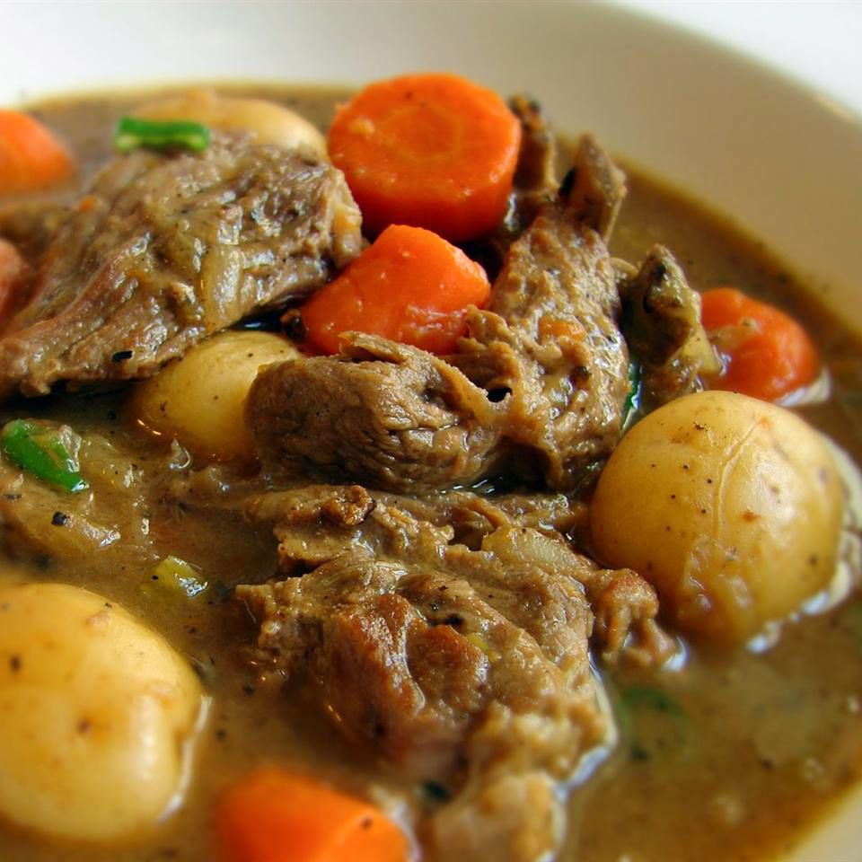

Description
Beast Feast Stew was invented while living on a ranch in Wyoming and spending my time hunting with my friends. The idea was that we where all going to come together around the fire and make a stew which each person had to bring a meat that they had harvested. The first Beast Feast Stew consisted of Dear, Raccoon, Rabbit and Phesant along with vegetables.
Ingredients
- Meats of your choice
- 1.5 lbs baby potatos
- 2 Carrots chopped
- 1 Onion chopped
- salt
- Pepper
- 2 stalks celery chopped
- 3 cups chicken stock
- 0.5 teaspoon dried rosemary
- 1 tbsp vegetable oil
- water as needed
- 2 tbsp all-purpose flour
- 1 tbsp butter
- Season meats with salt and pepper
- Heat oil in a large skillet. Cook each meat untill brown on all sides, 3 to 5 minuts. Transfer to stock pot.
- Cook onion with a pinch of salt in the same skillet over medium heat untill slightly softened and edges are browning. about 5 minuts. Stir butter into onlion untill melted; add flour and stir untill onions are coated, about 1 minut
- Pour stock into onion mixture; bring to a boil, add rosemary, and stir until mixture thickens, 5 to 10 minuts.
- Stir carrots and celery into pot with meat and pour chicken stock mixture over the top. Add water as needed to cover the meat completely. Bring mixture to a simmer, reduce heat to low, cover the pot with a lid, and cook untill meat is almost falling off the bone. about 1.5 hours.
- Transfer meat to a plate. Stir potatoes into stew and return meat to stew, placing on top of vegetables. Simmer, covered, until potatoes are tender and meat is falling off the bone, about 30 minuts.
- Tranfer meat to a plate using a slotted spoon. Bring stew to a boil and cook, skimming off fat, until stew is reduced and thick, 10 to 12 minuts
- Remove meat from bones; discard bones and any pieces of fat. Stir meat back into stew. Stir green onions into stew and season with salt and pepper to taste.